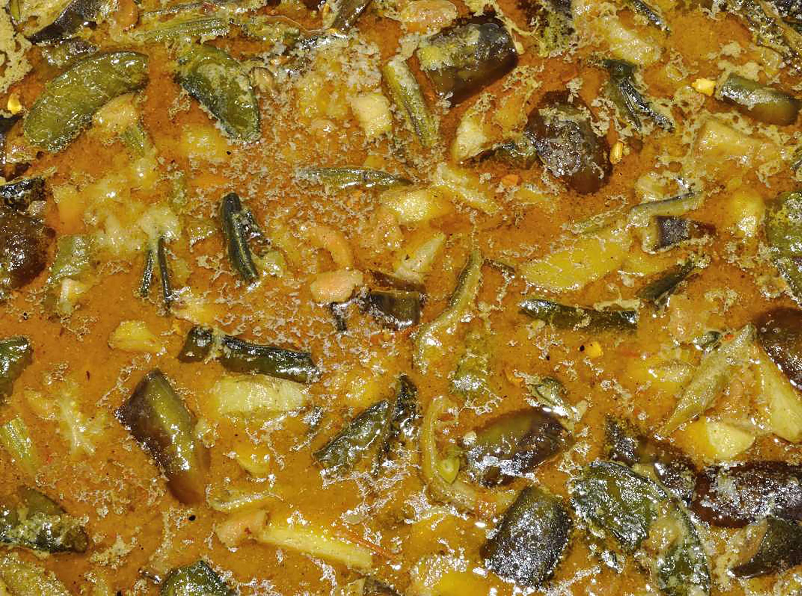

Here are 15 Dishes of Bengali Food that you must try:
1. Aloo Potol Posto

Make a mental note, Bengalis love poppy seeds. They really do and why won't they, it makes food so much tastier! This preparation above is also made of poppy or Posto as the Bengalis like to call it. It is a preparation of Posto with potatoes and pointed gourd, complete with red and green chillies and sometimes coconut puree to add some much-needed spice to it. It truly is one of the classic Bengali dishes and famous food of West Bengal!
2. Ilish Macher Jhol
One of the much-favoured fishes in the region, Hilsa or ilish fish curry is something that you have got to try your hands on. The pungent smelling curry prepared with Nigella seeds and chilli to give it the required balance that makes it so perfect. You have got to try this one as it one of the staple food of West Bengal.
3. Shukto
Who said Bengalis are all for fish and nothing else? Well, Bengalis do know how to do their vegetables too. And Shukto is just an example. Usually served as the first course of a diet, Shukto is a combination of different vegetables like Brinjals, Bitter Gourd, Crunchy Drumsticks and Bori. Mixed with grounded spices and milk to make a thick curry, this is a perfect way to start a meal.
4. Mutton Biryani
Although made famous in various parts of the country, each marked with unique cooking techniques and spices; one should also try this taste in this part of the country. Filled with the rich aroma of spices and ghee, the mutton biryani is simply heaven. Juicy, tender pieces of mutton, fried with the biryani on a Tava, this yummy recipe is a must-try.
5. Mishti Doi
Mishti Doi is a sweetened yoghurt dish that is served at the end of supper and serves as a sweet dish. Though served all around the country now, it was initially made famous by Bengal. Try it if you have a sweet tooth.
6. Rosogolla
A lot of sweets and desserts in India are made using milk and usually they are also the most popular ones. One such popular sweet is Rasgulla, it comes from the state of West Bengal which is famous for it’s mouth-watering desserts.
7. Sandesh
The most popular sweet from the Bengali state, this dish is made of khoya, a version of condensed milk and is heavenly in taste. This sweet is neither overly sweet thus allowing people with a non-sweet tooth to enjoy too. One should definitely try this delectable West Bengal food item.
8. Patishapta
Another unique Bengali sweet, this is usually homemade with a batter of powdered rice and rolled with the preparation of coconut bits with sugar and khoya. One of the most amazing Bengali dishes, one has got to try this one, sweet tooth or not. I am sure you are going to love it.
9. Luchi
A deep-fry delicacy, no Bengali household can ever complete a celebration without Luchis. Prepared with maida instead of the atta flour which is used to make chapattis, this delicacy looks like smaller sized, fluffy, deep-fried chapattis, with a golden glow. The crispy Luchis are a mandate for all the important small celebrations that take place in the Bengali household.
10. Alur Dom

Although there are different ways to prepare this dish made of potatoes, it continues to be a hit in the regular Bengali household. If there is nothing else in the house, potatoes always come to the rescue. The dish can be incorporated with many different spices and prepared in many different ways. It is most commonly eaten with Luchi, another Bengali delicacy.
11. Tangra Macher Jhol
As you are familiar with the fact that Bengal has a rich source of fresh water as well as saltwater fishes, you might also know the fact that Bengal tries a lot of different varieties of fishes. The Tangra fish is basically the catfish that is found in the freshwater bodies abound in the region. The fish is prepared with freshly ground spices, and the thin curry is light on the stomach and also supremely tasty too. It is a big hit among the Bengalis in the region.
12. Chholar Dal
One of the Bengali's favourite dals, this dish is made with chana dal as the main ingredient. With its slightly sweet and spicy taste, the dal is perfect to eat with rice or Luchis. Addition of delicious spices like bay leaves, coconut bits and cinnamon increases the taste manifold. Although one may get a lot of gourmet dishes, the real Bengali taste is in the simple dishes prepared in the common Bengali household.
13. Mochar Ghonto
Mochar Ghonto is a delicious preparation of banana flower, crushed coconut and potato, cooked with some cumin and bay leaves. This mouth-watering dish is filled with the sweetness and spice that makes it an amazing try. An authentic Vegetarian west Bengal dish, this is proof that there is more to Bengalis than fish and meat.
14. Lau Ghonto
Lau is bottle gourd, which is cooked with Udad Dal Boris and some light spices. Although the dish is not so spicy, it is good for the stomach and delicious too, so that is a bonus. Try this recipe if you want to rest your stomach after a hard day at work. Enjoy this Bengali food with rice.
15. Aam Pora Shorbot
A drink made of chilled water, burnt raw mangoes and sugar, it is an instant relief that you will get on a sweltering summer afternoon (and with the Kolkata heat you might as well require it). The raw mangoes are burnt, but only partially, with the skin a bit charred which lends a smoky taste to the drink. Best served chilled; this drink is surely the one which is more relaxing and refreshing than the colas with artificial sweetness.